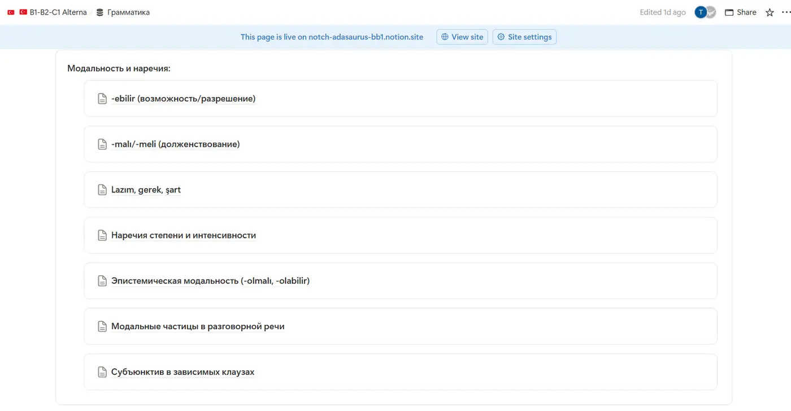
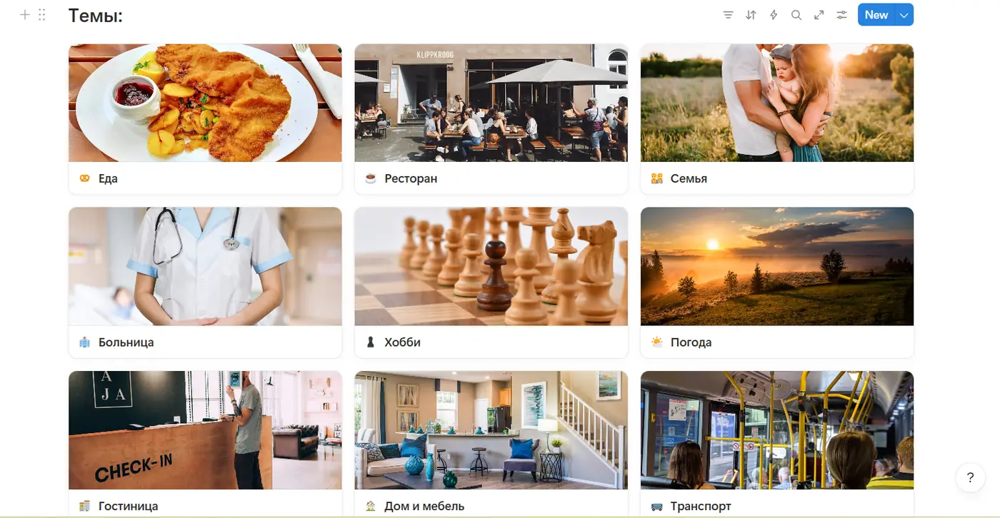
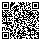

Самый короткий путьот «хочу»до «могу»
Модальные конструкции в турецком: -ebilir, -meli, lazım, gerek, zorunda, şart. Как сказать «могу», «надо», «вынужден» и «без вариантов». С историями, озвучкой и тренажёром.
Для тех, кто уже говорит «я иду», но застревает на «мне надо идти», «я не могу прийти» и «вам придётся подождать».
[ Проблема ]
В русском «могу», «надо», «должен» — отдельные слова. Поставил перед глаголом — готово. В турецком половина из них прячется внутри глагола, а вторая половина стоит в конце и требует, чтобы глагол сначала превратился в существительное. Отсюда «Ben su lazım» и пустой взгляд продавца.
[ Решение ]
Шесть конструкций, разложенных по силе: от «можешь» до «без этого никак». К каждой — история, формула, озвучка. Потом конструктор на 384 формы, шкала обязательности и тест из восьми ситуаций. Двенадцать минут — и «надо» по-турецки перестаёт быть проблемой.
Турецкий не спрашивает, хочешь ли ты. Он спрашивает, можешь, должен или вынужден. И на каждый ответ у него свой суффикс.
Этот разбор — один из 128 гайдов платформы Alterna Timur. Здесь он целиком и бесплатно. Внизу — что ещё лежит рядом.
Всем привет. Меня зовут Тимур. Мне 22 года. Я живу в Анталье. Учусь на электроинженера в университете Акдениз.
Турецкий я учил год в TÖMER. Сейчас у меня C1.
А в первый день у меня было одно слово. Merhaba.
Сегодня — модальность. Звучит как кафедра лингвистики. На деле это «могу», «надо» и «без вариантов».
Без них в Турции можно только здороваться. Долго. Со всеми.
Поехали.
Где именноты спотыкаешься
Десять остановок. Идём по порядку или прыгаем туда, где болит.
-abil / -ebilМогу
Один суффикс на «могу», «умею», «можно» и «может быть». Удобно. Пока не попробуешь сказать «не могу».
У меня был TÖMER. В TÖMER была доска. У доски стояла Ханде-ходжа.
Первая неделя. Ханде-ходжа смотрит на меня и говорит, Timur, gelebilir misin?
Я знаю gel. Gel — это «иди сюда». Остальное — шум.
Говорю, gelemem.
Она говорит, neden?
Говорю, bilmiyorum.
Класс смеётся. Я тоже смеюсь. Все смеются — и я смеюсь.
Я хотел сказать «не понял вопрос». Сказал: «Подойти к доске не могу. Почему — сам не знаю».
Доска была в трёх метрах.
К доске я, кстати, вышел. Через неделю.
Корень + (y) + abil/ebil + ir + лицо
- a или e — по последней гласной корня: yapabilirim, gelebilirim.
- Корень на гласную — вставляем y: okuyabilirim, bekleyebilirim.
- git и et перед гласной меняют t на d: gidebilirim, yardım edebilirim.
- Сам -bil- не меняется никогда. Всегда -bilir-.
Нажми на карточку. У меня в первую неделю эти три слова слились в одно.
Или «может, приду». Возможность, способность, разрешение.
bil исчез. Отрицание «могу» — это -ama/-eme плюс аорист. Никаких «gelebilmem».
«Может, не приду». Отрицание стоит до -ebil, а не вместо него.
В консульстве в Анталье я стажировался. За месяц сказал «Bekleyebilir misiniz?» раз двести.
Приказов там не отдают. Там всё через -ebilir misiniz.-malı / -meliДолжен
Совет врача, мамин голос в голове, внутренний долг. Не закон, не обстоятельства. Просто «так будет правильно».
В Анталье в июле +42. Я решил бегать. В обед.
На третий день я сидел у врача.
Врач смотрит на меня. На градусник. Опять на меня.
Говорит, dinlenmelisin. Su içmelisin. Öğlen koşmamalısın.
Говорю, tamam.
Он говорит, dışarıda kaç derece, biliyor musun?
Говорю, biliyorum.
Он говорит, o zaman neden?
Говорю, закалка.
Три -meli в одном предложении. Врач был прав трижды.
Бегать я, кстати, не бросил. Бегаю в шесть утра.
Корень + malı/meli + лицо
- Начинается с согласной — никаких буферов и никаких t → d. Самый послушный суффикс.
- Лица: -yım / -sın / — / -yız / -sınız / -lar. yapmalıyım, yapmalısın, yapmalı.
- Отрицание — перед ним: gelmemelisin, «тебе не стоит приходить».
- Бонус: «Yorgun olmalısın» — не «ты обязан устать», а «ты, должно быть, устал». Об этом в главе 07.
lazım · gerekНадо
Самое частое слово в турецком магазине. И самое частое место, где русскоязычные ломаются.
В первый месяц у меня сел телефон. Телефон — это карта, переводчик и мама.
Захожу в магазин электроники. Продавец говорит, buyurun, ne lazım?
Слово «зарядка» я не знаю. Знаю lazım.
Говорю, lazım. И показываю телефон.
Он говорит, ne lazım? Говорю, lazım. Показываю телефон сильнее.
Он смотрит на меня, как на телефон. Потом берёт зарядку и говорит медленно, по слогам:
Bana şarj aleti lazım.
Говорю, bana şarj aleti lazım. Он говорит, aferin.
Зарядку я купил. Фразу — тоже. Её мне отдали бесплатно.
Кому (дательный) + что + lazım
Не «я нуждаюсь», а «мне нужно». Как в русском: мне, а не я. Bana, sana, ona, bize, size, onlara.
Глагол + ma/me + «чей» + lazım
Глагол превращается в существительное «хождение» и получает хозяина: gitmem — «моё хождение». Буквально: «моё хождение нужно». (Benim) gitmem, gitmen, gitmesi, gitmemiz, gitmeniz, gitmeleri lazım.
- lazım — разговорное, в магазине и на улице.
- gerek — то же, чуть нейтральнее. gerekiyor — «вот сейчас надо».
- gerek yok — не надо. lazım değil — не нужно.
zorunda · şartБез вариантов
Когда решаешь не ты. Решают обстоятельства, миграционная служба и окно номер семь.
У меня был ikamet. Точнее, не было. Его надо было продлить.
Göç İdaresi. Миграционная служба. Очередь, талончик, окно номер семь.
Мужчина в окне листает мои документы. Говорит, sağlık sigortası?
Говорю, sonra getirebilirim.
Он говорит, şart.
Говорю, yarın getirebilirim.
Он говорит, şart.
Говорю, bir hafta içinde…
Он говорит, şart. И отдаёт документы.
Я понял: şart — это не слово. Это стена.
Страховку я сделал в тот же день. Пришлось. Zorunda kaldım.
Глагол + mak/mek + zorunda + лицо
Выбора нет, давят обстоятельства. zorunda kaldım — «пришлось». Самая частая форма в рассказах про бюрократию.
Что-то + şart · глагол-ma + «чей» + şart
Строится как lazım, а весит в десять раз больше. Pasaport şart — без паспорта даже не начинай. Gitmen şart — идти обязательно, обсуждение закрыто.
lazım — тебе надо. zorunda — тебя заставили. şart — без этого не будет ничего.
Шкалаобязательности
Один глагол — gitmek, «идти». Двигай ползунок и смотри, как «можешь пойти» превращается в «идти обязательно». Чем выше путник, тем меньше у тебя выбора.
Конструктор384 формы
Выбери глагол, режим и лицо. Суффиксы падают кирпичами в правильном порядке, а внизу написано, почему именно так. Каждую форму можно послушать.
olabilir · olmalıДогадка
Те же суффиксы, только теперь они говорят не о правах и обязанностях, а о том, насколько ты уверен.
У меня был сосед по общаге. Эмре. Эмре не отвечал на звонки.
Я звоню — тишина. Звоню ещё — тишина.
Пишу общему другу: Emre nerede?
Друг отвечает: uyuyor olabilir.
Через час: uyumuş olmalı.
Через три часа друг перестал отвечать тоже.
Эмре проснулся в шесть вечера. Говорит, ne oldu?
Говорю, ничего. Мы тренировали модальность.
Друг, кстати, тоже спал.
Olur · OlmazТри слова
Половину модальности в живой речи турки закрывают тремя словами.
Olur — «можно», «ладно», «окей».
Olmaz — «нельзя», «ни за что», «так не пойдёт».
Olur mu? — «можно?», «ничего, если…?»
А с -sa получается самый мягкий вопрос в языке: Pencereyi açsam olur mu? — «ничего, если я открою окно?»
Короче, чем «Açabilir miyim?». И теплее.
Проверьсебя
Никаких «вставьте суффикс». Ситуация из жизни в Турции — выбираешь, что сказать.
Шпаргалка & порядок
-abil / -ebil
Могу · можноВозможность, умение, разрешение. С вопросом — вежливая просьба: Bekleyebilir misiniz?
-ama / -eme
Не могуbil исчезает. gelemem, gelemezsin, gelemez. Никаких «gelebilmem».
-ma + yabil
Могу не · может, неОтрицание перед -ebil. «Может, не приду» — вежливый способ не обещать.
-malı / -meli
Стоит · долженСовет и внутренний долг. С olmak — догадка: yorgun olmalısın, «наверное, устал».
lazım · gerek
Надо · нужноКому — в дательном. Действие — через -ma + «чей»: gitmem lazım. Не надо — gerek yok.
zorunda
Вынужден-mak/-mek + zorunda + лицо. Решают обстоятельства. «Пришлось» — zorunda kaldım.
şart
ОбязательноОбязательное условие. Строится как lazım, работает как бетонная стена в окне номер семь.
olabilir · olmalı
Наверное · навернякаДогадка: olabilir ≈ 50%, olmalı ≈ 90%. -miş olmalı — «видимо, уже»: gitmiş olmalı.
один из 128[ ПЛАТФОРМА ]
Грамматика и лексикас тем же подходом

Это скриншот из платформы. Блок «Модальность и наречия» — тот самый, из которого вырос этот гайд. Рядом ещё шесть тем.

Еда, ресторан, больница, гостиница, транспорт. Не список слов, а то, что реально говорят. С таблицами и транскрипцией.
У меня был TÖMER. Год. Каждый день с девяти до часу. Потом домашка. Потом сериал с субтитрами, потому что сил больше ни на что нет.
После TÖMER у меня был C1. И сорок вкладок в браузере.
Каналы. Плейлисты. Подкасты. Мультики. Словари. Приложения.
Половина — мусор. Вторая половина — золото. Где какая половина, я уже не помнил.
Я сел и разложил всё по уровням. Каждую ссылку открыл сам. Мусор выкинул.
Получилось 1716 материалов. И 128 гайдов. Вот таких, как этот.
Показываю другу. Он говорит, сколько. Говорю, тридцать долларов. Он говорит, в месяц? Говорю, один раз. Он говорит, а в чём подвох?
Подвоха нет. Есть 1716 материалов, которые не надо искать.
Вкладки я, кстати, закрыл. Все сорок.
Из Казахстана и карта не проходит? Пиши в WhatsApp — продам напрямую.
Фильмы, книги, мультики, подкасты, приложения, YouTube. Открываешь свой уровень и берёшь.
Разборы как этот. Без «откройте страницу 42».
По темам. То, что говорят на самом деле.
Слова, тексты, диалоги, аудирование, игры на запоминание.
A1, A2, B1, B2, C1 — по каждому отдельно.
Для тех, кто ищет работу в Турции или уже работает.
Посмотри,что внутри
настоящая платформа
Так это выглядитв работе
Три темы из семиты уже прошёл
Четвёртую попробовал в главе 07. Ещё три ждут на платформе. Вот что лежит в этом блоке.
- ✓-ebilir (возможность/разрешение)пройдено
- ✓-malı/-meli (долженствование)пройдено
- ✓Lazım, gerek, şartпройдено
- ½Эпистемическая модальность (-olmalı, -olabilir)попробовал
- ·Наречия степени и интенсивностина платформе
- ·Модальные частицы в разговорной речина платформе
- ·Субъюнктив в зависимых клаузахна платформе
A0 → C1
Без подписки. Без «продлите тариф».
128 гайдов по грамматике. Разбор как здесь. Без «откройте страницу 42».
131 блок лексики по темам. Не список слов, а то, что реально говорят.
109 интерактивных ресурсов. Слова, тексты, диалоги, аудирование, игры на запоминание.
32 блока по экзаменам. A1, A2, B1, B2, C1 — по каждому отдельно.
36 гайдов по работе. Для тех, кто ищет или уже пашет.
1716 материалов по уровням. Фильмы, книги, мультики, подкасты, приложения, YouTube. Открываешь свой уровень и берёшь.
Всё уже собрано. Искать не надо.
Спросичто угодно
Не знаешь, с чего начать на платформе? Выбери уровень — покажу первую дверь.
A0 — если турецкий пока только «Merhaba» и «Teşekkürler».
Это подписка?
Нет. $30 один раз — и доступ навсегда. Никаких автосписаний.
Я совсем с нуля. Подойдёт?
Да. Платформа идёт от A0 до C1. Для старта есть отдельная ветка A0–A1–A2: алфавит, 29 букв, первые фразы. А в каталоге мультфильмов 70 штук подходят с нуля.
Чем это лучше бесплатного YouTube?
Ничем, если у тебя есть сорок часов, чтобы найти нормальное и выкинуть мусор. Здесь это уже сделано: 1716 материалов разложены по уровням, а грамматика и лексика собраны в одном месте.
Как оплатить и получить доступ?
Оплата проходит на lava.top по кнопке «Приобрести доступ». Там же оформляется доступ. Если что-то пошло не так — пиши в Telegram, разберусь.
Я из Казахстана, оплата не проходит
Бывает. Напиши мне в WhatsApp — купить доступ можно напрямую через меня.
Кто это делает?
Тимур Ахметов. Студент университета Акдениз в Анталье, электроинженерия. Год на подготовительном TÖMER, турецкий на уровне TÖMER C1, английский — IELTS 7.5. Турецкую академическую систему знаю изнутри.
Остался вопрос
Пиши в Telegram: @timaxmetov. Отвечаю сам.
как можно скорееСвязаться
Готов перейтиот «могу»к «говорю»?
Türkiye
